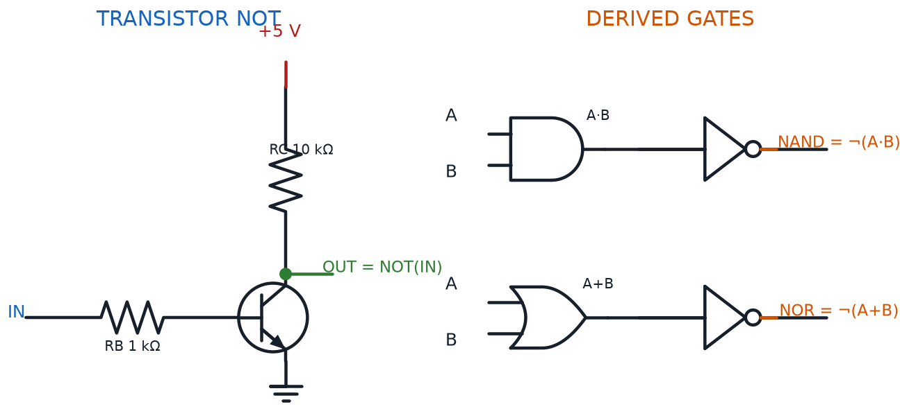
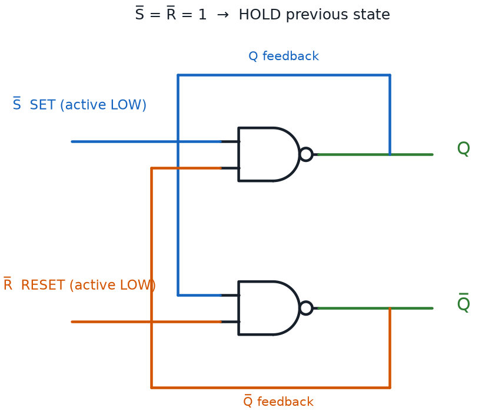

NAND, NOR, XOR, and the RS Latch
Summary
Students complete the course's digital-logic toolkit with NAND, NOR, and XOR gates, and build a simple RS latch — the course's only taste of digital memory, foreshadowing the flip-flops and memory cells in the final chapter.
Concepts Covered
This chapter covers the following 15 concepts from the learning graph:
- NOT Gate
- Transistor NOT Gate
- Two-Transistor Gate Circuit
- Gate Output LED Indicator
- NAND Gate
- NOR Gate
- XOR Gate
- Logic Level High
- Logic Level Low
- Combinational Logic
- RS Latch
- Set Input
- Reset Input
- Latch State
- Sequential Logic
Prerequisites
This chapter builds on concepts from:
Chapter 24 closed with a promise of its own: two gates down, four more logic ideas to go, plus something genuinely new waiting at the end. This chapter keeps every part of that promise. You'll finish the gate family by building NOT, NAND, NOR, and XOR out of the exact same transistors you've been wiring all along, and then you'll build a circuit that does something no circuit in this book has done before — remember something, on purpose, after you let go of the button.
Four Gates and a Memory
 Welcome back, builder! You already speak fluent AND and OR. This chapter teaches you the rest of the alphabet — and ends with your circuit doing something that might just give you chills: remembering. Let's light it up!
Welcome back, builder! You already speak fluent AND and OR. This chapter teaches you the rest of the alphabet — and ends with your circuit doing something that might just give you chills: remembering. Let's light it up!
One Gate Left Over: The NOT Gate
Chapter 24 built AND and OR from transistors but deliberately left one gate for later — the simplest gate of all, the one that only needs a single input.
A NOT Gate is any real circuit that implements the Logical NOT Operation from Chapter 24: it takes one input and outputs the opposite value, flipping a HIGH to a LOW and a LOW to a HIGH. Unlike AND and OR, a NOT gate never needs a second input to compare against — it just disagrees with whatever you give it.
A Transistor NOT Gate builds that inversion with a single NPN transistor, using the exact saturation-and-cutoff switching behavior from Chapter 13. The input connects through a base resistor to the transistor's base. The collector connects through a separate resistor up to the positive supply rail, and that same collector point doubles as the gate's output. The emitter ties straight to ground.
Diagram: Transistor NOT, NAND, and NOR Gates

Watch what happens as the input changes. Drive the base HIGH, and the transistor saturates — current flows straight through it to ground, pulling the collector down near 0 V. Drive the base LOW, and the transistor cuts off completely — no path to ground exists, so the pull-up resistor holds the collector up near the supply voltage instead.
- Input HIGH → transistor saturated → output pulled down → output LOW
- Input LOW → transistor cutoff → output pulled up → output HIGH
The output is always the opposite of the input, every single time — and those "pulled up near the supply" and "pulled down near 0 V" voltages deserve their own names, since you'll use them for the rest of this chapter. A Logic Level High is any voltage close enough to the circuit's positive supply rail to count as a boolean 1 — the full 5 V this course's kit runs on. A Logic Level Low is any voltage close enough to 0 V, or ground, to count as a boolean 0. Every gate in this chapter only ever outputs one of these two levels, with nothing valid in between.
One Recipe, Many Gates
Here's the pattern hiding behind every gate you've built so far, and every one you're about to build.
A Two-Transistor Gate Circuit wires two NPN transistors together either in series, for AND-like behavior, or in parallel, for OR-like behavior — sometimes followed by one more Transistor NOT Gate stage tacked onto the output to flip the answer. Series-plus-optional-inverter, or parallel-plus-optional-inverter: that's the entire recipe behind AND, OR, NAND, and NOR. Only the standalone NOT gate breaks the pattern, since it works with just one transistor and one input.
Same Parts, New Arrangement
 Every gate in this chapter is built from parts you already own: transistors, resistors, and LEDs. NAND and NOR aren't new components — they're the exact same series and parallel wiring from Chapter 24, with one extra inverting stage bolted onto the end.
Every gate in this chapter is built from parts you already own: transistors, resistors, and LEDs. NAND and NOR aren't new components — they're the exact same series and parallel wiring from Chapter 24, with one extra inverting stage bolted onto the end.
Before building the rest of the family, it's worth naming a trick you've already been using without a label. A Gate Output LED Indicator is an LED and its current-limiting resistor — the same pairing you calculated back in Chapter 18 — wired directly at a gate's output node, so the gate's invisible boolean answer becomes something you can actually see: lit means HIGH, dark means LOW. Every gate circuit in this book, all the way back to Chapter 16's wired switches, has used exactly this trick to turn voltage into visible proof.
AND's Grumpy Cousin: The NAND Gate
A NAND Gate — short for "NOT AND" — outputs the exact opposite of what a plain AND gate would output. Build one the way the Two-Transistor Gate Circuit recipe predicts: wire two transistors in series, exactly like Chapter 24's Transistor AND Gate, then feed that series circuit straight into one more Transistor NOT Gate stage. AND, then NOT — that's the whole idea, and it's exactly where the name comes from.
Boolean NAND Operation
where:
- \( Y \) is the output
- \( A \) is the first input
- \( B \) is the second input
- the bar over the whole expression means "invert whatever AND produces"
| A | B | Y = NAND(A, B) |
|---|---|---|
| 0 | 0 | 1 |
| 0 | 1 | 1 |
| 1 | 0 | 1 |
| 1 | 1 | 0 |
Compare that table to Chapter 24's AND table and you'll see every single row flipped. A NAND gate is HIGH for three out of four input combinations, and LOW for exactly the one combination — both inputs HIGH — that would have made a plain AND gate proud.
Spot the Bubble
 Engineers draw a NAND gate as an AND gate's flat-backed D shape with a tiny bubble on the output wire. That bubble always means "NOT this" — the exact same bubble shows up on a NOT gate's own symbol. Spot a bubble anywhere on a schematic, and you know an inverter is hiding there.
Engineers draw a NAND gate as an AND gate's flat-backed D shape with a tiny bubble on the output wire. That bubble always means "NOT this" — the exact same bubble shows up on a NOT gate's own symbol. Spot a bubble anywhere on a schematic, and you know an inverter is hiding there.
OR's Grumpy Cousin: The NOR Gate
A NOR Gate — "NOT OR" — flips a plain OR gate's answer the same way. Build one by wiring two transistors in parallel, exactly like Chapter 24's Transistor OR Gate, then adding a Transistor NOT Gate stage at the output. OR, then NOT.
Boolean NOR Operation
where:
- \( Y \) is the output
- \( A \) is the first input
- \( B \) is the second input
- the bar over the whole expression means "invert whatever OR produces"
| A | B | Y = NOR(A, B) |
|---|---|---|
| 0 | 0 | 1 |
| 0 | 1 | 0 |
| 1 | 0 | 0 |
| 1 | 1 | 0 |
A NOR gate is the pickiest gate you've met yet. It only outputs HIGH for one single combination — both inputs LOW — and drops to LOW the instant even one input turns on.
The Gate That Only Agrees to Disagree: XOR
An XOR Gate — "exclusive OR" — plays by a stranger rule than any gate so far. It outputs HIGH only when its two inputs disagree, one HIGH and one LOW in either order, and outputs LOW whenever they agree, whether that agreement is two LOWs or two HIGHs.
Boolean XOR Operation
where:
- \( Y \) is the output
- \( A \) is the first input
- \( B \) is the second input
- \( \oplus \) is read as "XOR" — the output is 1 only when \( A \) and \( B \) are different
| A | B | Y = XOR(A, B) |
|---|---|---|
| 0 | 0 | 0 |
| 0 | 1 | 1 |
| 1 | 0 | 1 |
| 1 | 1 | 0 |
XOR doesn't fit the simple series-or-parallel-plus-inverter recipe the way NAND and NOR do. Building one from scratch takes a small combination of gates you already have — an OR gate, a NAND gate, and one more AND gate, wired together so the whole group only agrees to output HIGH on disagreement.
XOR Is Not Just OR
 The bottom row is the only place XOR and OR disagree, and it trips up almost everyone at first. Plain OR says two HIGH inputs still count — either path works. XOR says two HIGH inputs cancel each other out. Check that bottom row every time.
The bottom row is the only place XOR and OR disagree, and it trips up almost everyone at first. Plain OR says two HIGH inputs still count — either path works. XOR says two HIGH inputs cancel each other out. Check that bottom row every time.
Naming the Whole Family: Combinational Logic
Six gates in, and every single one shares a property worth naming before moving on. Combinational Logic describes any circuit whose output depends only on its current combination of inputs, with zero regard for what those inputs used to be a moment ago. Feed a combinational circuit the same inputs twice, in any order, at any time, and it hands back the identical answer both times.
- Every truth table you've built in this book — AND, OR, NOT, NAND, NOR, XOR — completely describes a combinational circuit
- A truth table has no "history" column, because combinational circuits have no history to record
- Chapter 16's wired switches, Chapter 24's transistor gates, and this chapter's NAND, NOR, and XOR gates are all Combinational Logic, no exceptions
Try out every gate in this family yourself, and confirm each truth table row against a real LED, before the chapter takes a sharp turn into something these gates can't do.
Diagram: Transistor Gate Explorer with LED Output
Transistor Gate Explorer with LED Output
Type: microsim
sim-id: transistor-gate-explorer
Library: p5.js
Status: Specified
Purpose: Let students click independent input buttons on a rendered breadboard holding a selectable transistor gate — NOT, NAND, NOR, or XOR — and directly watch the gate's Gate Output LED Indicator and its own self-filling truth table respond to every input combination, connecting the abstract truth tables above to a real circuit built from the exact transistor behavior learned in Chapter 13 and reused from Chapter 24.
Bloom Taxonomy: Apply (L3). Bloom Verb: demonstrate, predict, verify.
Learning objective: Given a rendered breadboard with a transistor-based NOT, NAND, NOR, or XOR gate selected from a dropdown, predict and then verify the output LED's state and the corresponding row of a live truth table for every possible input combination.
Reuse check: An embeddings search (find-similar-templates, mode=reuse) for "Title: Transistor Gate Explorer with LED Output | Topic: NOT gate, NAND gate, NOR gate, XOR gate, transistor logic gates, gate output LED indicator, logic level high low | Subjects: Electronics, Electric Circuits | Grade Level: Junior High | Learning Objectives: Given a rendered breadboard circuit with transistor-based NOT, NAND, NOR, and XOR gates, click input buttons and observe the output LED and a live, self-filling truth table" returned a top match of "Logic Gates MicroSim" (dmccreary/digital-electronics, WHAT score 0.5953, recommendation "generate"), followed by "Single Logic Gate MicroSim" (dmccreary/digital-electronics, WHAT score 0.5584, "generate") and "Transistor Driver and Dimmer Circuit" (dmccreary/moving-rainbow, WHAT score 0.5542, "generate"). All three teach gates through standard IEEE schematic symbols or an unrelated dimmer circuit, not a physical breadboard circuit built from real NPN transistors — the same gap Chapter 24's transistor-and-or-logic-gates specification identified. A keyword search of the catalog for "NAND gate," "NOR gate," and "XOR gate" surfaced only schematic-symbol sims and the unrelated Flip Flop MicroSim. New specification. Library/Implementation fit: an excellent, central candidate for the breadboard-sim-generator skill — reuses this repository's existing bbTransistor() component from breadboard-lib.js (already built for Chapter 13 and extended for Chapter 24's AND/OR gates) for every gate option, and reuses the self-filling truth-table panel and current-path animation pattern specified for Chapter 24's transistor-and-or-logic-gates sim.
Canvas layout: A rendered breadboard with a dropdown at the top selecting the active gate (NOT, NAND, NOR, XOR); one or two input push buttons (A, and B for every gate except NOT); the selected gate's transistor arrangement wired to a collector-side resistor and Gate Output LED Indicator; a right-side panel holding a live, self-filling truth table for the selected gate plus a small clickable schematic gate-symbol icon showing the bubble convention.
Components/elements involved: Rendered breadboard with power and ground rails; one or two NPN transistors (TO-92 package, leads individually labeled and hoverable) wired according to the selected gate, plus an inverting transistor stage for NAND and NOR; one or two input push buttons; a collector-side resistor and LED; connecting wires; a live truth-table panel; a clickable IEEE-style gate-symbol icon with its bubble (or lack of one) visible.
Required interactivity: - Selecting a gate from the dropdown redraws the breadboard with that gate's transistor wiring and resets the input buttons and truth table - Pressing each input button toggles that transistor's base current on or off; the output LED updates immediately, and the matching row of the truth table highlights and fills in with the live output value - Hovering any transistor's base, collector, or emitter lead opens an infobox naming that lead, reinforcing Chapter 13's vocabulary - Clicking the gate-symbol icon opens an infobox explaining the bubble convention and stating this gate is Combinational Logic — its output only ever depends on the buttons currently pressed - Animated current dots move only along the completed path, so students can see an inverting stage's path light up separately from the main series or parallel path
Default state: NAND selected, both buttons released, LED dark, truth table empty except a highlighted arrow pointing at the all-LOW row; infobox reads "Press A and B together — this is the one row where NAND disagrees with plain AND."
Instructional Rationale: An Apply-level "demonstrate/predict/verify" objective needs a manipulable circuit with an immediate, checkable consequence. Letting students switch between all four gates in one sim, rather than four separate sims, lets them directly compare how the same two transistors produce different truth tables depending on wiring and inversion — reinforcing the Two-Transistor Gate Circuit concept as one recipe with several outcomes.
Color scheme: Same green current-flow dots and dim gray off-state used in Chapter 13's transistor-switch demo and Chapter 24's gate sim; blue highlight on the truth-table row currently being demonstrated.
Responsive behavior: Breadboard and the truth-table/infobox panel stack vertically on narrow screens; input buttons and the gate dropdown remain full-width and touch-friendly.
Implementation: p5.js, built on the breadboard-sim-generator skill's rendered tie-point approach, extending this repository's existing breadboard-lib.js bbTransistor() component and the truth-table panel pattern specified for Chapter 24's transistor-and-or-logic-gates sim.
Something New: Sequential Logic
Every gate you've met since Chapter 16 forgets everything the instant its inputs change. Let go of a button, and the circuit's memory of that button press vanishes completely. That's about to stop being true.
Sequential Logic describes a circuit whose output depends on both its current inputs and its own past state — in other words, a circuit with memory built in. A sequential circuit can hold onto an answer even after the inputs that produced it are long gone, which is something no purely Combinational Logic circuit can ever do, no matter how many gates you chain together.
This One's a Real Leap
 Don't worry if this feels like a bigger jump than NAND or NOR did — it is one. Every circuit before this page reacted instantly and forgot instantly. You're about to build the first one that doesn't, and that idea is worth sitting with for a moment.
Don't worry if this feels like a bigger jump than NAND or NOR did — it is one. Every circuit before this page reacted instantly and forgot instantly. You're about to build the first one that doesn't, and that idea is worth sitting with for a moment.
Set, Reset, and a Circuit That Remembers
An RS Latch — short for "Set-Reset latch" — is the simplest sequential circuit in existence, and you already have every part you need to build one. Take two NAND gates, and cross-couple them: feed the first gate's output into the second gate's input, and feed the second gate's output back into the first gate's input. That feedback loop is the entire secret. It gives the circuit something to remember, and somewhere to keep remembering it, even after you stop touching anything.
Two more wires complete the circuit, and each one earns its own name. The Set Input is the control line that, when pressed, forces the latch's stored value to HIGH. The Reset Input is the control line that, when pressed, forces that same stored value back to LOW. Together they're the only two ways to change what the latch is holding onto.
That stored value has a name too, and it's the whole reason this circuit exists. The Latch State, usually labeled Q, is the single bit of information the RS latch is currently holding. Release both the Set Input and the Reset Input, and the Latch State doesn't drift back to some default zero. It just stays exactly where you left it — that's memory, built from nothing but two NAND gates and a feedback loop.
Diagram: Cross-Coupled NAND RS Latch

| Set | Reset | Latch State (Q) | What's Happening |
|---|---|---|---|
| Pressed | Released | HIGH (1) | Latch sets — Q becomes 1 |
| Released | Pressed | LOW (0) | Latch resets — Q becomes 0 |
| Released | Released | Unchanged | Latch holds its last state — this is the memory |
| Pressed | Pressed | Not allowed | Both inputs fight for control — avoid this combination |
Try the cross-coupled NAND circuit below yourself. Press Set, let go, and notice the state doesn't reset itself — it's genuinely remembering.
Diagram: SR Flip Flop MicroSim (Cross-Coupled NAND RS Latch)
Run SR Flip Flop MicroSim (Cross-Coupled NAND RS Latch) Fullscreen
SR Flip Flop MicroSim (Cross-Coupled NAND RS Latch)
Type: microsim
sim-id: flip-flop
Library: p5.js
Status: Reused
Purpose: Let students press a Set button and a Reset button on a cross-coupled NAND-gate RS latch and watch the crossed feedback wires change color, directly demonstrating that the Latch State holds steady after both buttons are released.
Bloom Taxonomy: Apply (L3). Bloom Verb: demonstrate, verify.
Learning objective: Given a rendered RS latch built from two cross-coupled NAND gates, press the Set Input and Reset Input independently and verify that the Latch State persists after both inputs are released.
Local path: docs/sims/flip-flop/ (see docs/sims/flip-flop/index.md). Built from a drawNAND decomposition — two NAND gates cross-coupled into a Set/Reset flip-flop — the exact circuit this chapter describes. This is a direct, purpose-built match already living in this repository, so no external reuse search was needed: it is this chapter's RS Latch example.
Canvas layout: A 350×300 canvas showing two cross-coupled inverting gates with crossed feedback wires, a Q label and a Q̅ (Q-not) label, a Set button positioned at the upper left, and a Reset button positioned at the lower left.
Components/elements involved: Two NAND-based inverting gates, crossed feedback wires, a Set button, a Reset button, Q and Q̅ output labels.
Required interactivity: - Clicking Set forces the Latch State HIGH; the wires carrying that state turn green, and the opposite wires turn red - Clicking Reset forces the Latch State LOW, swapping which wires are green and which are red - Releasing both buttons changes nothing — the latch keeps showing whichever state was set last, demonstrating the Latch State concept directly
Default state: Reset — Q reads LOW until Set is pressed at least once.
Instructional Rationale: An Apply-level "demonstrate/verify" objective for a brand-new concept like Sequential Logic needs the simplest possible working example, not a feature-rich one. Two buttons and two colored wires are enough to prove the entire point: press Set, let go, and the color doesn't change back on its own.
Color scheme: Green wire for the currently active state, red wire for the inactive one, matching the course's established current-flow color convention.
Responsive behavior: Fixed 350×300 canvas sized to fit inside the chapter's iframe at any screen width; buttons remain tappable at mobile widths.
Implementation: p5.js, cross-coupled NAND gate decomposition (drawNAND), reused as-is from docs/sims/flip-flop/.
Chapter Summary: Key Takeaways
You finished this chapter's gate family, and then broke that family's biggest rule on purpose.
- A NOT Gate, built as a Transistor NOT Gate, inverts a single input using one transistor and the Logic Level High / Logic Level Low vocabulary
- Every gate in this chapter is a Two-Transistor Gate Circuit — series or parallel, sometimes with an inverting stage — read out through a Gate Output LED Indicator
- A NAND Gate inverts AND, a NOR Gate inverts OR, and an XOR Gate outputs HIGH only when its inputs disagree
- All six gates you now know are Combinational Logic — their output depends only on the current input combination, never on history
- Sequential Logic breaks that rule: an RS Latch, built from two cross-coupled NAND gates, uses a Set Input and a Reset Input to control a Latch State that survives after both inputs let go
Chapter 26 is the last stop on this journey: Advanced Circuits and Your Capstone Project. Every skill from every chapter — power, resistors, capacitors, diodes, transistors, timing, shift registers, and now logic and memory — comes together as you design, build, and demonstrate one original project of your own.
Memory Unlocked
 Builder, you just gave a circuit a memory. Not a metaphor — an actual bit of information, held in place by nothing but two gates and a feedback loop, that stayed put after you let go. That's not just a new skill. That's the exact same idea running inside every computer's RAM chip. Current's flowing your way — see you in Chapter 26!
Builder, you just gave a circuit a memory. Not a metaphor — an actual bit of information, held in place by nothing but two gates and a feedback loop, that stayed put after you let go. That's not just a new skill. That's the exact same idea running inside every computer's RAM chip. Current's flowing your way — see you in Chapter 26!